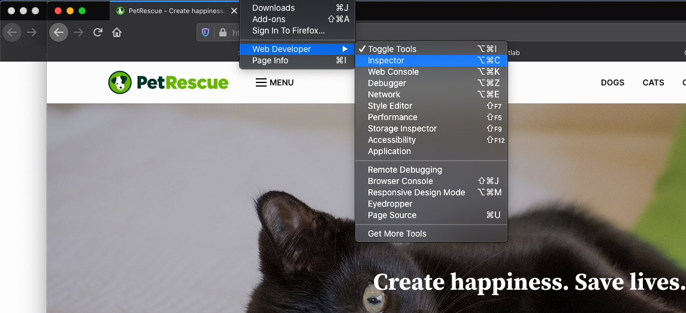
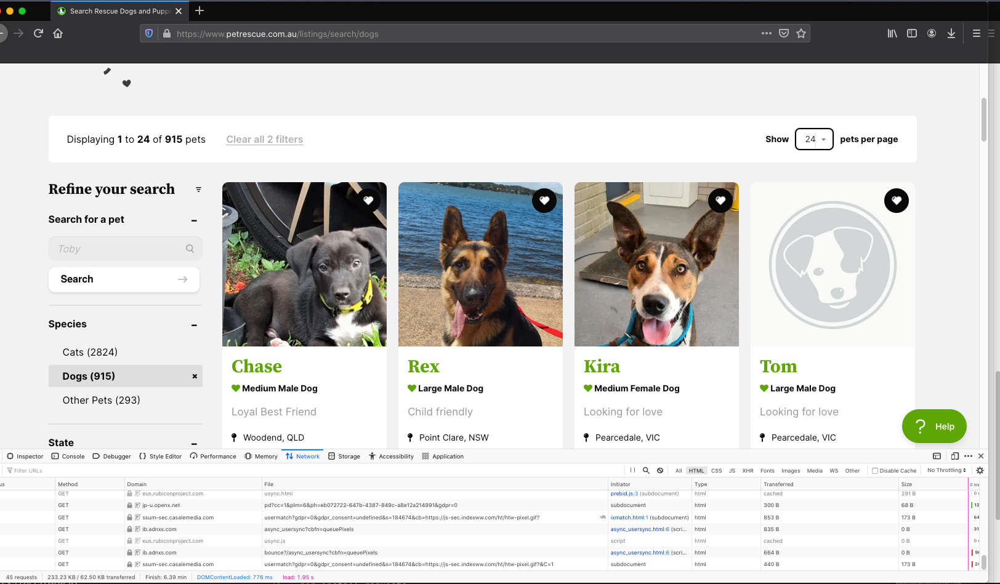
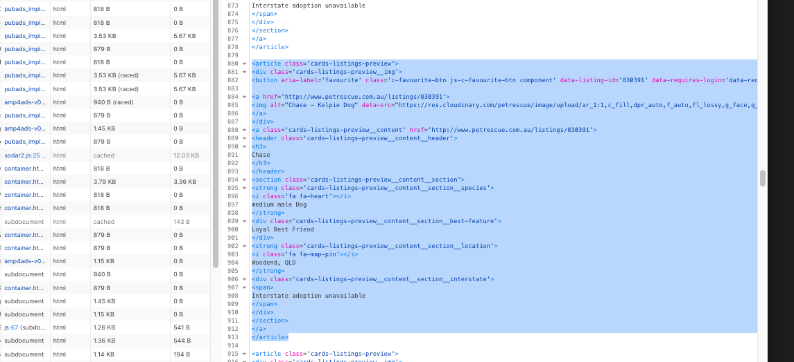

Intro to webscraping
Webscraping involves writing small programs to automatically extract data from websites. It’s an extremely useful technique for creating large aggregated datasets using publicly available data as it’s inexpensive and fast. With the large amount of data available in the public domain it can also be the best way to obtain up-to-date and complete data for a given task.
There are plenty of applications of webscraping, across domains ranging from economic statistics to data journalism to compliance monitoring. Here are some specific ones:
- Estimating the Consumer Price Index
- Creating aggregated datasets for research and machine learning training
- Monitoring business openings and closures
- Tracking house prices
- Identifying under-payment of wages through job listings
- COVID-19 response
Learning the basics is straightforward and requires only a few lines of Python. The main challenge is identifying the relevant snippets of HTML, JSON or Javascript containing the data you are looking for; this is usually the most time-consuming part as well.
In this tutorial I will give an introduction to webscraping using two simple examples. All the code is in a Jupyter Notebook.
Ethics and best practices
Before we begin, there are some general tips to ensure you’re doing the right thing:
- Read the robots.txt file: this is found at (domain name of website)/robots.txt. It will tell you which parts of the website can and can’t be scraped;
- Only make a single request to the website at a given time. This helps to avoid placing too much load on the server;
- Read the website Terms and Conditions, particularly if you are planning to use the data for commercial purposes.
The UK Office of National Statistics has a handy Webscraping Policy too. Unfortunately, no Australian jurisdiction appears to have created anything similar.
Now, let’s begin.
Install the relevant libraries
We’ll need Pandas and LXML for data wrangling and Requests to make HTTP requests.
pip install requests
pip install pandas
pip install lxmlMake your first HTTP request
Open up a Python terminal and type the following code
import requests
url = 'https://www.abc.net.au'
page = requests.get(url)
print(f'Status: {page.status_code}')If everything is working you should get:
Status: 200
There are a few different HTTP Verbs: GET, POST, DELETE, PUT and others. I have only ever used GET and POST (when you have to send some data). If you get a response code other than 200 then generally something has gone wrong. Here’s a full list of HTTP response codes.
First example: Create a dataset of lonely dogs
In this first example let’s scrape Pet Rescue, a site containing profiles of dogs and cats (and other animals) available for adoption. Perhaps we want a dataset of images of cats and dogs to train an object detection algorithm, or a dataset of common pet names, or maybe just want to know how the available pets are distributed throughout Australia.
Inspecting the data
Once you’re at the website, open up the Inspector (Tools → Web Developer → Inspector in Firefox) or Developer Tools (View → Developer → Developer Tools in Chrome).

Then click on the ‘dogs’ link to get to the first page of ‘dog profiles’. You will see the window at the bottom under the Network tab fill up with links corresponding to different elements of the website. Note that the actual content will look slightly different as the pet listings change over time. Doing this we find the HTML snippet that relates to one of the dogs.

Click on the ‘dogs’ row under the Network tab (it should be the first row) and then Response and Response payload in the window on the right. This will show the HTML for the web page. We can do a quick search to get the name, location and characteristics of one of the dog profiles.

The entries for each of the dogs has the same structure and from this we can extract all the names, sizes and locations.
Using LXML to extract the relevant data
Now we know where the relevant data is located, we can define some LXML paths to extract it. An alternative is Beautiful Soup. Here are LXML paths for the name and location data:
name_path = '//article[@class="cards-listings-preview"]/a/header/h3/text()'
location_path = '//strong[@class="cards-listings-preview__content__section__location"]/text()'The LXML syntax can appear a bit clunky but the name_path variable is saying to look for every instance of the article tag with class value “cards-listing-preview” then look at the a tag below this, followed by the header tag, the h3 tag and then the text within this.
The code for extracting the names and locations is then:
from lxml import html
import requests
url = 'https://www.petrescue.com.au/listings/search/dogs'
page = requests.get(url)
tree = html.fromstring(page.text)
names = tree.xpath(name_path)
locations = tree.xpath(location_path)Because of the <i> tags we get additional strings returned in the location_path so we take every second one. The full Python code to get all the data from a single page is then:
from lxml import html
import requests
url = 'https://www.petrescue.com.au/listings/search/dogs'
page = requests.get(url)
tree = html.fromstring(page.text)
name_path = '//article[@class="cards-listings-preview"]/a/header/h3/text()'
location_path = '//strong[@class="cards-listings-preview__content__section__location"]/text()'
names = tree.xpath(name_path)
locations = tree.xpath(location_path)
locations = locations[1::2]Skipping to the next page, the url is https://www.petrescue.com.au/listings/search/dogs?page=2 so we can scrape all the pages by looping over a range of integers and, for each request, appending an integer to the base url https://www.petrescue.com.au/listings/search/dogs?page=. Let’s add in this bit of code:
from lxml import html
import requests
import pandas as pd
url_base = 'https://www.petrescue.com.au/listings/search/dogs?page='
name_path = '//article[@class="cards-listings-preview"]/a/header/h3/text()'
location_path = '//strong[@class="cards-listings-preview__content__section__location"]/text()'
all_names = []
all_locations = []
for n in range(1, 50):
print(f'Scraping page: {n}')
url = f'{url_base}{n}'
page = requests.get(url)
tree = html.fromstring(page.text)
names = tree.xpath(name_path)
locations = tree.xpath(location_path)
locations = locations[1::2]
all_names += names
all_locations += locationsI like to print out which page is being scraped for debugging purposes and also as a sort of progress indicator. Finally, once we’ve scraped all this data, we can add put it all into a nice tidy Pandas Dataframe (with a tiny bit of text processing to remove unwanted spaces and new lines characters):
df = pd.DataFrame(data={'name': all_names, 'location': all_locations})
df['name'] = df['name'].str.strip()
df['location'] = df['location'].str.strip()And we have a nice tidy dataset of dog names and locations. Here are the first five rows:
| name | location |
|---|---|
| Teddy Yoric | Brunswick, VIC |
| Tilly Goldsworthy | Richmond, VIC |
| Marnie & Panda Wazowski | Hampton, VIC |
| Bear Hartwell | Altona Meadows, VIC |
| Shayla Caballero | Clifton Hill, VIC |
Second example: ATM locations in Australia
For this example we’ll extract JSON data, which is usually a bit easier to work with than HTML as it’s naturally represented as Python dictionaries. We’ll do this by scraping all National Australia Bank ATMs.
Firstly, with the developer tools / inspector open, navigate to https://www.nab.com.au/locations. In the inspector select the XHR tab in the right-hand pane. The reasoning is that, since there is a store locator in the page, there is an API behind the scenes that is delivering this data.
Scrolling through the different files we inspect the response provided by each. We find that file ‘4000?v=1’ produces a nice nested data structure of what appears to be locations and names of ATMs and branches. Clicking through to the headers tab we find the URL is:
https://api.nab.com.au/info/nab/location/locationType/atm+brc/queryType/geo/-37.7787919055083/144.92910033652242/-37.74062261073386/144.99833566347752/1/4000?v=1There is also some header information that we may need, so we include this too.
Notice that four of the numbers in the URL look like latitude and longitude values and so these likely describe a bounding box for the search area. Since we are interested in all the ATMs and branches in the country we expand it to a box that encompasses all of Australia. The maximum and minimum latitude and longitude values of this bounding box are:
lat_min, lng_min = -43.834124, 114.078644
lat_max, lng_max = -10.400824, 154.508331The code to scrape the locations of all NAB ATMS (which can in this case be done in only a single request) is:
import requests
import pandas as pd
lat_min, lng_min = -43.834124, 114.078644
lat_max, lng_max = -10.400824, 154.508331
url = f'https://api.nab.com.au/info/nab/location/locationType/atm+brc/queryType/geo/{lat_min}/{lng_min}/{lat_max}/{lng_max}/1/4000?v=1'
headers = {'Host': 'api.nab.com.au',
'Origin': 'https://www.nab.com.au',
'Referer': 'https://www.nab.com.au/',
'x-nab-key': 'a8469c09-22f8-45c1-a0aa-4178438481ef'}
page = requests.get(url=url, headers=headers)
data = page.json()Notice that since the output of the HTTP request is in JSON format it can immediately be converted to a Python dict. It is now a matter of finding where the location information is.
The final Python code is:
import requests
import pandas as pd
lat_min, lng_min = -43.834124, 114.078644
lat_max, lng_max = -10.400824, 154.508331
url = f'https://api.nab.com.au/info/nab/location/locationType/atm+brc/queryType/geo/{lat_min}/{lng_min}/{lat_max}/{lng_max}/1/4000?v=1'
headers = {'Host': 'api.nab.com.au',
'Origin': 'https://www.nab.com.au',
'Referer': 'https://www.nab.com.au/',
'x-nab-key': 'a8469c09-22f8-45c1-a0aa-4178438481ef'}
page = requests.get(url=url, headers=headers)
data = page.json()
df = pd.json_normalize(data['locationSearchResponse']['locations'])
df = df[['atm.address1', 'atm.suburb', 'atm.state', 'atm.postcode', 'atm.latitude', 'atm.longitude']].dropna()The json_normalize method in Pandas is a handy way to flatten the nested JSON data into a flat data structure. Now we have a nice tidy data frame with the address, latitude and longitude of each ATM:
| atm.address1 | atm.suburb | atm.state | atm.postcode | atm.latitude | atm.longitude |
|---|---|---|---|---|---|
| Brunswick City Centre, 94 Sydney Road | Brunswick | VIC | 3056 | -37.775660 | 144.961047 |
| 406 Sydney Road | Coburg | VIC | 3058 | -37.743756 | 144.966389 |
| 406 Sydney Road | Coburg | VIC | 3058 | -37.743756 | 144.966389 |
Summary and General tips
That’s enough of an intro to get started. Using a couple of examples, we’ve covered the basics of scraping HTML and JSON, and parsing the data into tidy form using LXML and Pandas. To summarise:
- Remember to check the Terms and Conditions, robots.txt file and consider the application that you are using the data for;
- The developer tools in the browser are a good way to identify the relevant elements in the web site;
- There is fair amount of hack-work required to find where the relevant data is, and it changes from website to website. The two examples here illustrate how scraping works for a fair number of different websites;
- Those with store locators or unofficial APIs are generally much easier to scrape as the data is already in a relatively structured form.
To make things easy, all the code in this post is available in a (hopefully) easy-to-follow Jupyter Notebook.